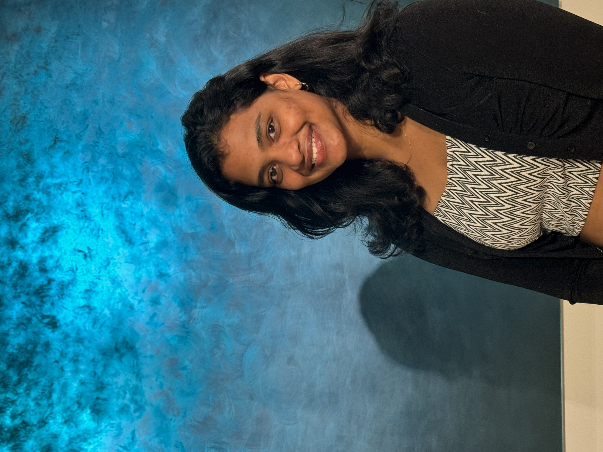

I am a recent Master’s graduate in Information Systems from Santa Clara University (June 2025), with 3+ years of professional experience at Cisco, Accenture, and Infosys. My work spans data analytics, NLP, business intelligence, and strategy, with a strong focus on turning data into actionable insights.
I have also served as a Teaching Assistant, guiding graduate and undergraduate students in Tableau and BI practices. I enjoy blending technical expertise with storytelling to create meaningful business outcomes.